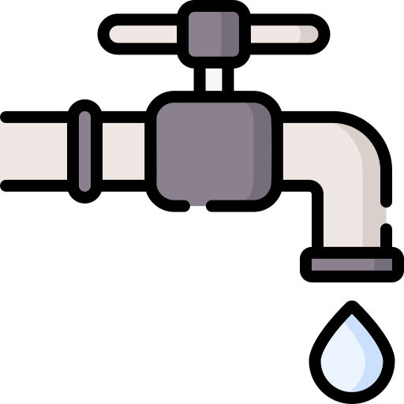
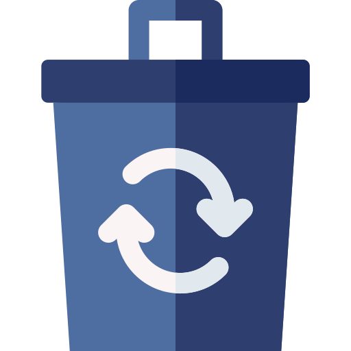
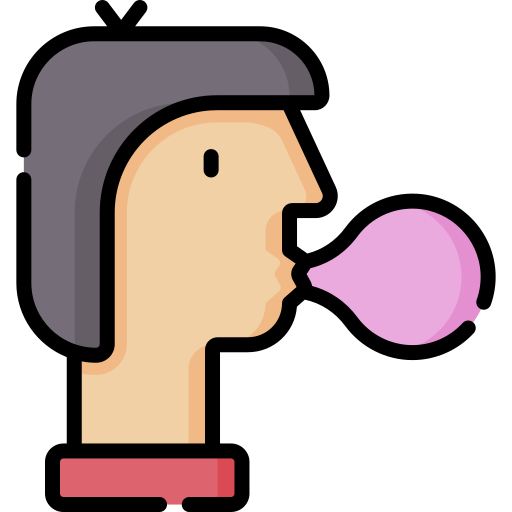
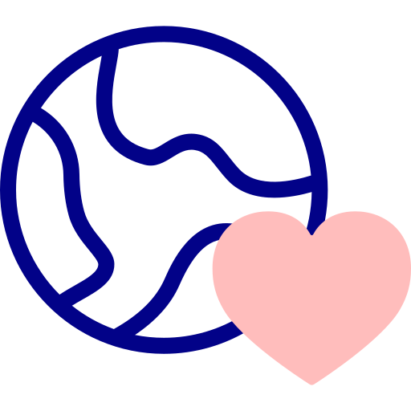
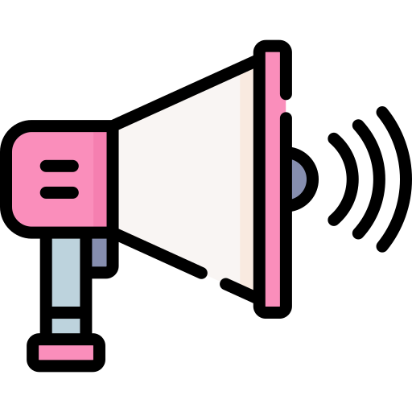

Trinke Leitungswasser
Leicht umsetzbar UND schonend für den Geldbeutel.
„Trinkwasser zählt in Deutschland zu den am besten kontrollierten
Lebensmitteln. Das Trinken von Leitungswasser erzeugt weniger als
ein Prozent der Umweltbelastungen von Mineralwasser.“
– Umweltbundesamt
In Deutschland 470.000 entstehen Tonnen Plastikmüll durch
Einweg-Plastikflaschen. Der ganze Transport kommt dann auch noch
hinzu. (Glasflaschen sind nebenbei auch nicht viel besser)
Section 2
Stuff
Section 3
Stuff
-
Trinke LeitungswasserLeicht umsetzbar UND schonend für den Geldbeutel.
„Trinkwasser zählt in Deutschland zu den am besten kontrollierten Lebensmitteln. Das Trinken von Leitungswasser erzeugt weniger als ein Prozent der Umweltbelastungen von Mineralwasser.“ – Umweltbundesamt
In Deutschland 470.000 entstehen Tonnen Plastikmüll durch Einweg-Plastikflaschen. Der ganze Transport kommt dann auch noch hinzu. (Glasflaschen sind nebenbei auch nicht viel besser) -
 Achte auf Verpackungen und sorge für weniger AbfallKarton-, Glas- oder wenn möglich sogar Unverpacktes vorziehen und kleine Mengen / einzeln Verpacktes vermeiden. Eigene Kaffeebecher für den To-Go Kaffee mitnehmen, Mittagessen in einer Tupperdose transportieren, Tüten wiederverwenden.
In Deutschland werden 2,8 Mrd. Kaffeebecher pro Jahr verbraucht. Und diese Becher lassen sich nur sehr schlecht recyclen… (Quelle: Statista) -
Schüttle deine Ernährung aufNahezu 70% der direkten Treibhausgasemissionen unserer Ernährung sind auf tierische Produkte zurückzuführen. (Quelle: WWF)
Vor allem Rindfleisch ist besonders umweltschädlich. Mal Falafel statt Hackfleisch oder eine Gemüsepfanne statt Schnitzel zu Essen hat eine große Auswirkung!
Das eigene Essen umzustellen kann anfangs etwas komisch sein, ist aber definitiv machbar und führt zu interessanten kulinarischen Experimenten. – Ich, ehemaliger Steak-Liebhaber und fragwürdiger Koch
Sehr Interessante Doku auf Netflix über Veganismus und vegane Sportler: The Game Changers -
 Kein Kaugummi!Kaugummis bestehen aus Erdöl :/
(Es gibt ein paar natürlich hergestellte Alternativen auf dem Markt.) -
 Frage dich gelegentlich: Brauche ich das wirklich?
Die meisten kennen das berühmte Zitat aus Fight Club:
Frage dich gelegentlich: Brauche ich das wirklich?
Die meisten kennen das berühmte Zitat aus Fight Club:
„Wir kaufen Dinge, die wir nicht brauchen, mit Geld, das wir nicht haben, um Leute zu beeindrucken, die wir nicht mögen.“
Herstellung, Transport und Entsorgung sind bei allen Gütern mit einer gewissen Umweltbelastung verbunden. Um diesen Punkt nicht mit Zahlen zur überladen, nur eins: Allein der CO2 Verbrauch der Online-Retouren betrug im Jahr 2018 238.000 Tonnen. Nur die Retouren!! (Quelle: Spiegel)
Das Highlight: Die meisten Retouren werden vernichtet!
Wiederstehe! Trage dazu die durch einen übermäßigen Konsum verursachte Umweltschäden zu senken und denke darüber nach ob du dein Bedürfnis nicht mit Ausleihen, Reparieren oder eine gesunde Verarbeitung deiner Emotionen lösen könntest.
Geld sparen könntest du so auch! Und falls du doch was kaufen musst, könntest du E-Bay Kleinanzeigen oder lokale Geschäfte Amazon vorziehen. Bezos hat genug Geld. 😉 -
 Überprüfe ob du Ökostrom beziehen kannst
Ökostrom wird von erneuerbaren Energien (Wind, Wasser, Sonne) bezogen und gilt als viel weniger umweltbelastend. Konventioneller Strom entsteht durch die fossilen Energieträger, Kohle, Gas und Öl und sorgt für eine Verschmutzung der Atmosphäre mit Unmengen an Treibhausgasen.
Überprüfe ob du Ökostrom beziehen kannst
Ökostrom wird von erneuerbaren Energien (Wind, Wasser, Sonne) bezogen und gilt als viel weniger umweltbelastend. Konventioneller Strom entsteht durch die fossilen Energieträger, Kohle, Gas und Öl und sorgt für eine Verschmutzung der Atmosphäre mit Unmengen an Treibhausgasen. -
 Gehe sparsam mit den Ressourcen Wasser, Strom und Benzin um
Das hat bestimmt jeder schonmal gehört.
Gehe sparsam mit den Ressourcen Wasser, Strom und Benzin um
Das hat bestimmt jeder schonmal gehört.
Kippen + Heizen = 👿
Licht anlassen = 👿
Wasser unnötig laufen lassen = 👿
Nur Auto fahren = 👿
Ständig Fliegen = 👿 👿 👿 -
 Erkenne, dass uns das „Ja, Aber“-Argument nicht weiterbringtDu machst X? Ja, aber Y ist immer noch scheiße.
1 ist mehr als 0. Jeder kann zu einer besseren Welt beitragen, nur einen Punkt dieser Liste zu erfüllen ist schon unglaublich viel mehr wert als Nichtstun.
Wir sind alle heuchlerisch und 100% umweltfreundlich kann heutzutage, aufgrund der Komplexität der Welt keiner sein.
Am umweltfreundlichsten ist es vermutlich in einem Wald, getrennt von der Gesellschaft, zu leben und sich selbst zu versorgen. -
 Teile diese Liste und dein WissenWir schaffen das nur gemeinsam! Ignoranz ist der wahre Gegner.